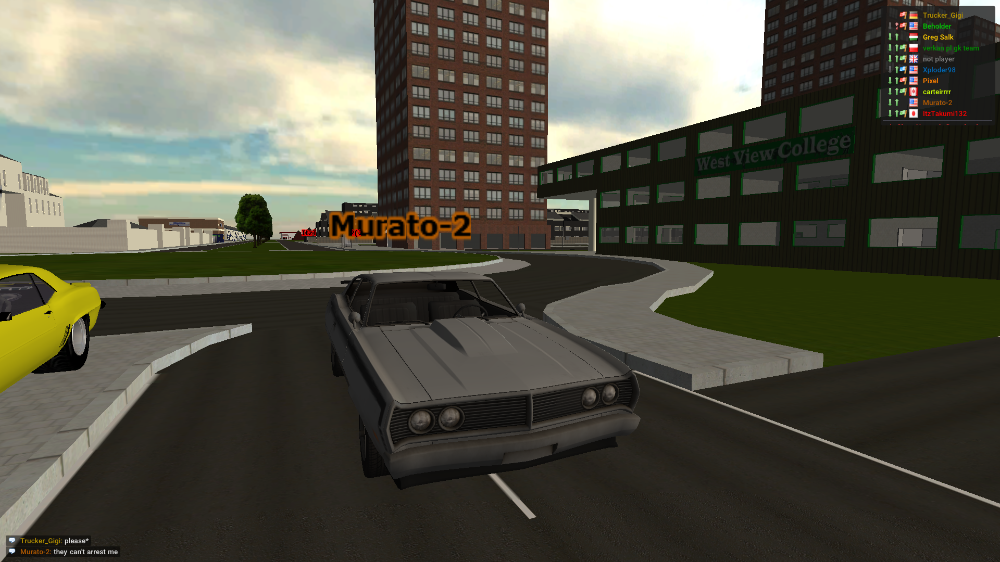

Recent Violations
Quick summary of this system: Police officers can report other Players using the form. The form will be handled by Moderators and the result will be posted here, but only if they approved the report. Moderators have to state every penalty here. Proof images or videos have to be included if there are any. Moderators have to update the table on the main page of this system, too.
Reports:
Players are allowed to appeal against the cases below. Please head to our Discord server or contact Trucker_Gigi via the Forum. Please note that you can only do so within the month you've been fined.
Case 1 [civil]
| Suspect | Reporter | Infractions | Points |
|---|---|---|---|
| Manieczek | Pixel | §9, §18, §22 | 6 |
Protocol:
"This driver was very reckless with constant tailgating of a learner and proceeded to make an unsafe pass on a two lane road that
caused a collision between two drivers after failing to yield until it was safe to pass, as well as they also decided to flee the scene
afterwards"
Report approved by an Moderator. Two points for dangerous overtaking (§9); Two points for tailgating a learner (§18);
Two points for not stopping for police officers (§22).
- Trucker_Gigi 02/08/21
Proof

Case 2
| Suspect | Officer | Infractions | Points |
|---|---|---|---|
| Richard brooks | Trucker_Gigi | §5, §18 | 2 |
Protocol:
The suspect lost control over his vehicle while he was clearly speeding. He put other drivers in danger.
- Trucker_Gigi 03/08/21
Proof
Case 3
| Suspect | Officer | Infractions | Points |
|---|---|---|---|
| Richard brooks | Trucker_Gigi | §18 | 2 |
Protocol:
The suspect lost control and drifted off the road, which resulted "only" in major damage to his car. The suspect could have hurt other
people with his reckless driving.
- Trucker_Gigi 03/08/21
Proof
Case 4
| Suspect | Officer | Infractions | Points |
|---|---|---|---|
| Pixel, Richard brooks | Trucker_Gigi | §18 | 2+3 |
Protocol:
The first suspect, Pixel, caught my attention when he overtook me by driving off the road to my right hand side. He later stopped when I
flashed my lights on him. He even pulled up, so I will only request two points. The second suspect almost killed me and another police officer
while entering the town with extreme speed. He seemed to have tried to steer away from me or the police bmw. This resulted into him crashing
into a bus stop. He could have hurt or even killed multiple people, just because of his reckless driving (§18). Pixel stated that he tried
to escape from someone, but I am not sure if that's an excuse or not. He did not hesitate to pass me on the roadside.
- Trucker_Gigi 03/08/21
Proof
Case 5 [civil]
| Suspect | Reporter | Infractions | Points |
|---|---|---|---|
| verkan pl gk team | Manieczek | §2, §11, §18, §28.4 | 5 |
Protocol:
"verkan pl gk team was driving a vechicle that was not road save (had sligtly broken bumper and engeine cover)and was *speeding he have
hit the barrier and lost control of his vechicle then he crashed into my city bus injuring 2 peoples and causing minor damage to my
vechicle and major to his. *(going about 110 km/h in30 km/h speed limit)"
Report approved by an Moderator. Requesting five points. Two for
speeding in a 30km/h zone (§18); One for driving a not road safe car (§11); Two for causing an accident with a "broken"
vehicle (§28.4).
- Trucker_Gigi 09/08/2021
Proof

Case 6
| Suspect | Officer | Infractions | Points |
|---|---|---|---|
| Murato | Trucker_Gigi | §8, §22 | 2 |
Protocol:
The suspect was about to do an illegal street race. He blocked the traffic and was heading into the wrong direction (I will not fine the
suspect for facing the wrong way while stationary). He might have launched facing the wrong way, but I don't have any proof for that. He
did not move his vehicle off the road when I asked him to do so. I am requesting one point for each infraction.
- Trucker_Gigi 12/08/2021
Proof
Case 7
| Suspect | Officer | Infractions | Points |
|---|---|---|---|
| verkan pl gk team | Trucker_Gigi | §5 | 3 |
Protocol:
The suspect was excessively speeding. That was his only infraction in this case. I'm requesting three points for his reckless speeding.
The suspect did about 296 km/h.
- Trucker_Gigi 12/08/2021
Proof

Case 8
| Suspect | Officer | Infractions | Points |
|---|---|---|---|
| not player | Trucker_Gigi | §13, §8 | 2 |
Protocol:
§1 of the public transit guideline has not been respected by the suspect. He blocked the traffic flow and caused me, who was on duty
during an emergency, to stop and to drive onto the sidewalk in order to get past the taxi. The taxi seemed to be not used and the suspect was
most likely not near the unmanned vehicle. The suspect risked the life of other people and blocked the traffic flow. I am requesting one point for
each infraction.
- Trucker_Gigi 23/08/2021
Proof